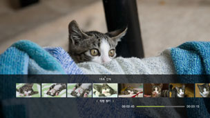
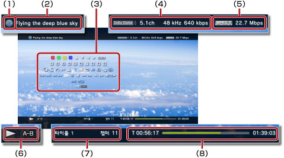

비디오 > 제어판 사용하기
제어판 사용하기
화면상의 제어판에서 다양한 조작을 할 수 있습니다. 제어판은  버튼으로 표시/비표시를 전환할 수 있습니다.
버튼으로 표시/비표시를 전환할 수 있습니다.
이 페이지에 표시된 아이콘의 의미는 다음과 같습니다.
 |
읽기 전용 Blu-ray Disc(BD)에 기록된 비디오 |
|---|---|
 |
쓰기가 가능한 BD에 기록된 비디오 |
 |
AVCHD 형식으로 기록된 비디오 |
 |
|
 |
DVD-R/DVD-RW에 VR 모드로 기록된 비디오 |
| 하드 디스크에 저장된 동영상 파일 | |
 |
기록 미디어에 저장된 동영상 파일* |
| * |
사용하시는 PS3™에 따라서는 기록 미디어를 사용하기 위해 별매의 USB 어댑터가 필요한 경우가 있습니다. |
|---|
중요
콘텐츠에 따라서는 제작자의 의도에 따라 미리 재생 조건이 정해져 있는 경우가 있습니다. 이런 경우 제어판의 일부 항목이 기능하지 않는 경우가 있습니다.
빨강/초록/노랑/파랑 


아이콘에 해당하는 조작을 수행합니다. 재생할 콘텐츠에 따라 아이콘에 할당된 기능이 다릅니다.
위/아래/왼쪽/오른쪽

항목을 선택합니다.
결정
선택한 항목을 결정합니다.
숫자키

숫자를 입력합니다.
팝업 메뉴
팝업 메뉴를 표시합니다.
메뉴
메뉴를 표시합니다.
톱 메뉴
톱 메뉴를 표시합니다.
리턴
비디오의 특정 지점으로 돌아갑니다.
장면 찾기


일정한 간격으로 섬네일을 표시하여 보고 싶은 장면을 선택하여 재생합니다.

1. |
방향키 |
|---|

 로 섬네일을 표시할 간격을 선택합니다.
로 섬네일을 표시할 간격을 선택합니다.2. |
방향키 |
|---|

 로 보고 싶은 장면을 선택합니다.
로 보고 싶은 장면을 선택합니다.알아두기
- 챕터가 없는 동영상에서는 [챕터]를 선택할 수 없습니다.
- 1분 미만의 동영상 파일은 장면 찾기를 할 수 없습니다.
- 동영상 파일의 종류에 따라서는 장면 찾기를 할 수 없는 경우가 있습니다.
- 섬 네일을 선택하면 약 15초 간 미리보기를 재생합니다.
이동


챕터 또는 시간을 지정하여 재생합니다.
| 타이틀 X | 타이틀 번호를 지정합니다. |
|---|---|
| 챕터 X | 챕터 번호를 지정합니다. |
| XX:XX / XX:XX:XX | 시간을 지정합니다. |
알아두기
동영상 파일에 따라서는 (이동)을 사용하지 못하는 경우가 있습니다.
앵글 변경
같은 장면이 다중 앵글로 기록된 콘텐츠의 화면 앵글을 변경합니다.
음성 변경
다중 음성이 기록된 콘텐츠의 음성을 변경합니다.
자막 변경
여러 가지 자막 언어로 기록된 콘텐츠의 자막을 변경합니다.
자막 스타일 변경
여러 가지 자막 스타일로 기록된 콘텐츠의 표시 옵션 중 하나를 선택합니다.
음량 조정
 (비디오)에서 재생되는 콘텐츠의 음량 출력 레벨을 설정합니다. 9 단계로 조정할 수 있습니다.
(비디오)에서 재생되는 콘텐츠의 음량 출력 레벨을 설정합니다. 9 단계로 조정할 수 있습니다.
알아두기
- 음량 출력 레벨을 너무 올리면 소리가 찢어져 들리는 경우가 있습니다. 이런 경우에는 음량 출력 레벨을 낮춰 주십시오.
- 사용하시는 오디오 기기 및 출력할 음성의 종류에 따라서는 설정이 무효화될 수 있습니다.
음성/영상 설정
(비디오)에서 재생할 콘텐츠의 출력과 관련된 설정을 합니다. 재생하는 콘텐츠에 따라 표시되는 항목이 다릅니다.
| 프레임 노이즈 감소 | 미세한 노이즈를 줄입니다. |
|---|---|
| 블록 노이즈 감소 | 화면에 표시되는 모자이크 형태의 블록 노이즈를 줄입니다. |
| 모스키토 노이즈 감소 | 영상의 윤곽 부분에서 발생하는 모스키토 노이즈(깜빡임)를 줄입니다. |
| 업컨버트 | 업컨버트 출력을 설정합니다. 설정한 값은  (설정) > (설정) >  (비디오 설정) > [업컨버트]에 반영됩니다. (비디오 설정) > [업컨버트]에 반영됩니다. |
| 영상 출력 포맷 | 영상 출력 포맷을 설정합니다. DVD 또는 BD 재생시의 영상 출력 포맷을 선택할 수 있습니다. 설정한 값은 (설정) > (비디오 설정) > [BD/DVD 영상 출력 포맷 (HDMI)]에 반영됩니다. |
| Y Pb / Cb Pr / Cr 수퍼화이트 | 수퍼화이트 표시를 설정합니다. DVD, Blu-ray Disc(BD) 또는 AVCHD 디스크를 재생할 때 수퍼화이트 신호를 출력할 수 있게 되었습니다. 설정한 값은 (설정) >  (디스플레이 설정) > [Y Pb/Cb Pr/Cr 수퍼화이트 (HDMI)]에 반영됩니다. (디스플레이 설정) > [Y Pb/Cb Pr/Cr 수퍼화이트 (HDMI)]에 반영됩니다. |
| RGB 전체 범위 | RGB 전체 범위 표시를 설정합니다. 설정한 값은 (설정) > (디스플레이 설정) > [RGB 전체 범위 (HDMI)]에 반영됩니다. |
| 다이내믹 영역 제어 | 다이내믹 영역 제어를 설정합니다. Dolby의 음성(Dolby Digital, Dolby Digital Plus, Dolby TrueHD)이 기록된 DVD나 BD를 재생할 때의 다이내믹 영역 제어 설정을 선택할 수 있습니다. 설정한 값은 (설정) > (비디오 설정) > [BD/DVD 다이내믹 영역 제어]에 반영됩니다. |
| 음성 출력 포맷 | 음성 출력 포맷을 설정합니다. DVD 또는 BD 재생시의 음성 출력 포맷을 선택할 수 있습니다. 설정한 값은 (설정) > (비디오 설정) > [BD/DVD 음성 출력 포맷 (HDMI)] 또는 [BD 음성 출력 포맷 (광 디지털)]에 반영됩니다. |
시간 표시 변경
타이틀 또는 챕터의 경과 시간/남은 시간 표시를 전환합니다. 재생 중인 콘텐츠에 따라 표시되는 항목이 다릅니다.
스크린 모드
스크린 모드를 변경합니다.
| 표준 | 화면 크기에 맞게 표시합니다. |
|---|---|
| 줌 | 가로 세로 비율을 변경하지 않고 상하 혹은 좌우를 잘라 화면 가득히 표시합니다. |
| 풀 스크린 | 가로 세로 비율을 변경해 상하좌우를 연장하여 화면 가득히 표시합니다. |
| 오리지널 | 원래의 영상 크기로 표시합니다. |
알아두기
동영상 파일에 따라서는 스크린 모드를 변경하지 못할 수도 있습니다.
아이콘 변경
동영상 파일의 아이콘(섬네일)을 변경합니다. 동영상 파일의 재생중에 아이콘으로 삼고싶은 장면에서 (아이콘 변경)을 선택합니다.
알아두기
- 동영상 파일에 따라서는 아이콘을 변경하지 못할 수도 있습니다.
- 2초 이하의 동영상 파일은 아이콘으로 사용할 수 없습니다.
삭제
재생중인 동영상 파일을 삭제합니다.
화면 표시
재생 상태 및 기타 관련 정보를 표시합니다. 재생 중인 콘텐츠에 따라 표시되는 정보가 다릅니다.

(1) |
미디어 |
|---|---|
(2) |
타이틀 |
(3) |
제어판 |
(4) |
오디오 코덱/채널 수/샘플링 주파수/비트 레이트 |
(5) |
비디오 코덱/비트 레이트 |
(6) |
상태 아이콘 |
(7) |
타이틀/챕터 |
(8) |
경과 시간/총 시간 |
이전(처음으로 돌아가기)/다음
이전 또는 다음 챕터로 이동합니다.
알아두기
기록 미디어 또는 하드 디스크에 저장된 동영상 파일을 재생할 경우  (다음)을 사용할 수 없습니다. 또한
(다음)을 사용할 수 없습니다. 또한  (이전)을 선택하면 동영상 파일의 처음으로 이동합니다.
(이전)을 선택하면 동영상 파일의 처음으로 이동합니다.
빨리 되돌아가기/빨리가기
재생 중인 콘텐츠를 빨리 되돌아가기 또는 빨리가기로 재생합니다.  버튼을 누를 때마다 재생 속도가 변경됩니다.
버튼을 누를 때마다 재생 속도가 변경됩니다.
재생
콘텐츠를 재생합니다.
알아두기
재생중에 중지한 비디오를 다음에 재생할 때는 대부분의 경우 중지한 곳에서 시작합니다.
처음부터 재생하려면 PS 버튼을 눌러 재생을 종료하고 XMB™를 표시합니다. 아이콘을 선택하고 버튼을 누른 다음 옵션 메뉴에서 [처음부터 재생]을 선택합니다.
일시 정지
재생을 일시 정지합니다.
정지
재생을 멈춥니다.
건너뛰기 (뒤로)/건너뛰기 (앞으로)
15초 앞이나 15초 뒤의 영상으로 이동합니다.
느리게 (뒤로)/느리게 (앞으로)
느린 모드로 재생합니다.
프레임 후진/프레임 전진
한 프레임씩 재생합니다.
A-B 반복
지정한 구간을 반복 재생합니다.
1. |
반복 재생을 시작하려는 지점에서 |
|---|---|
2. |
반복 재생을 끝내려는 지점에서 |
알아두기
A-B 반복 기능을 해제하려면 (A-B 반복)을 선택합니다.
반복
콘텐츠를 반복 재생합니다.
알아두기
반복 기능을 해제하려면 [반복 끄기]가 표시될 때까지 (반복)을 선택합니다.